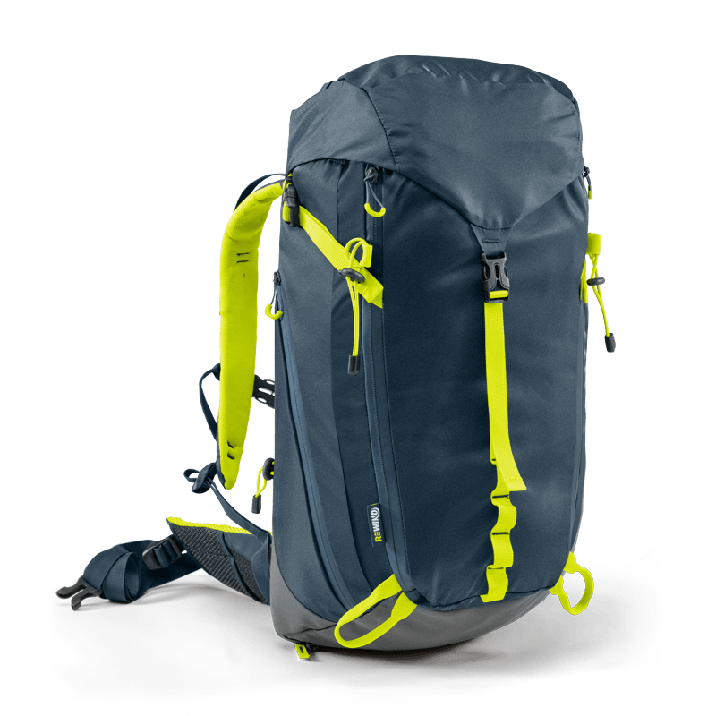
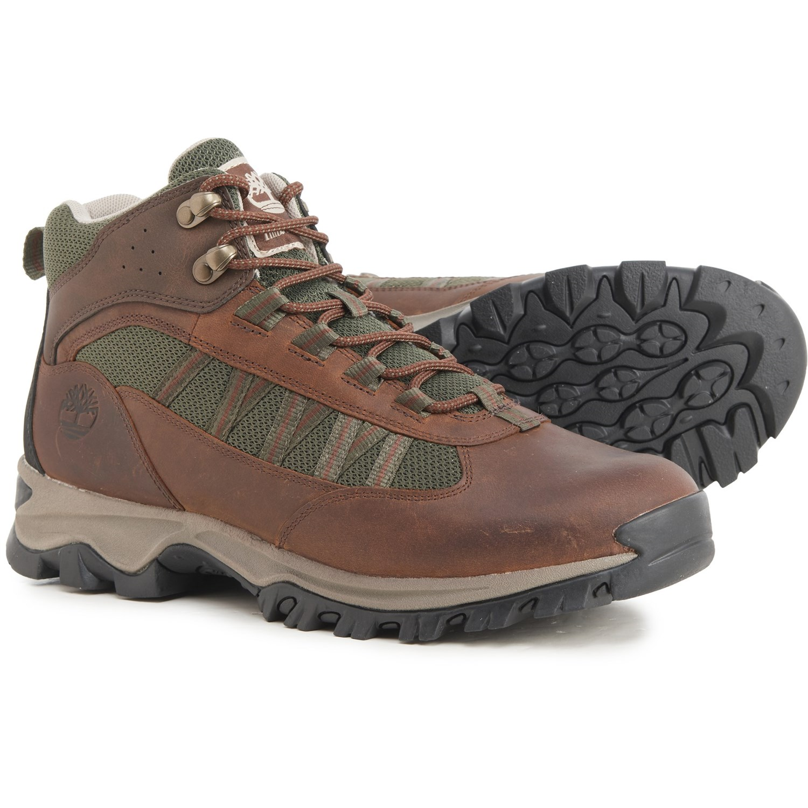
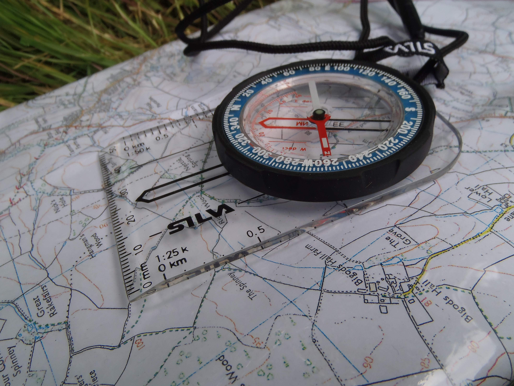
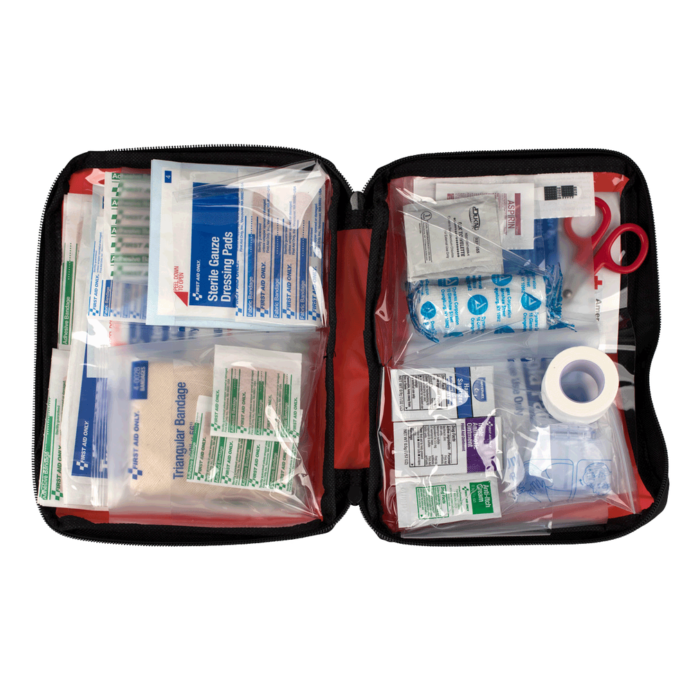
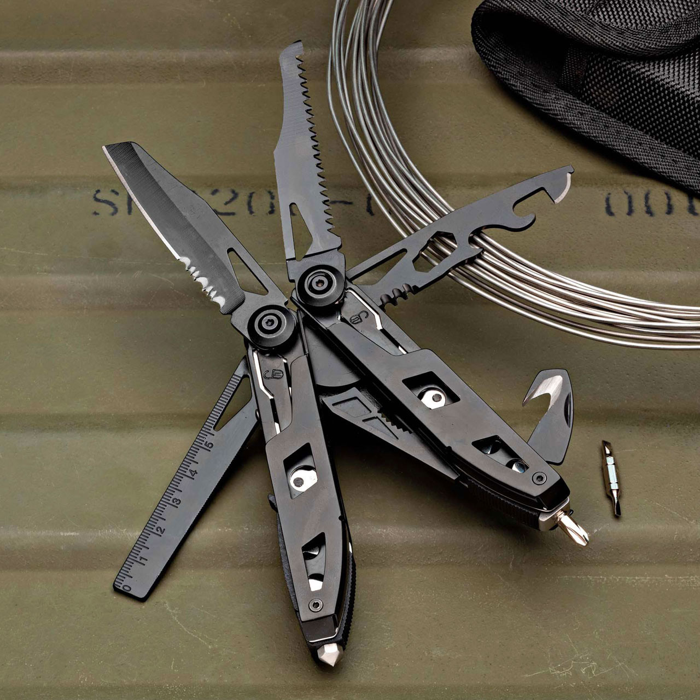
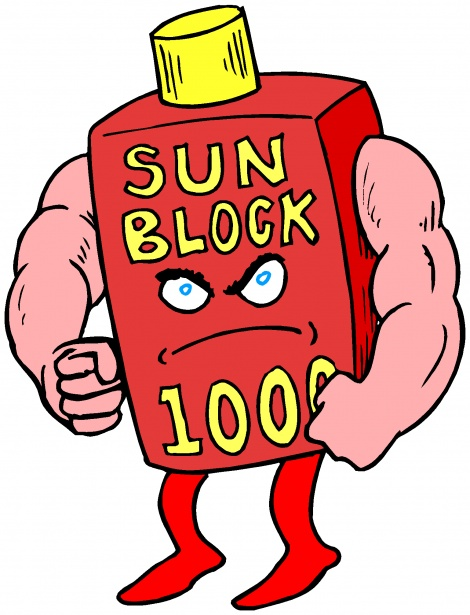
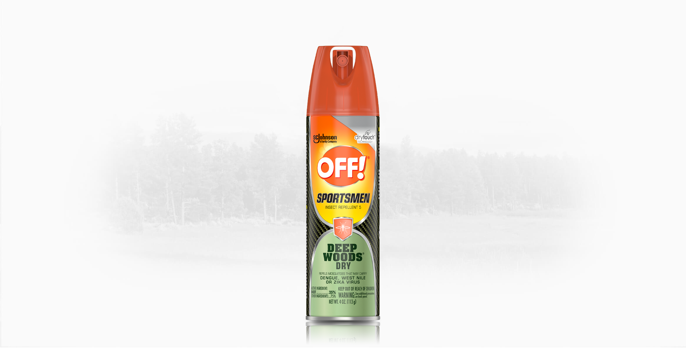
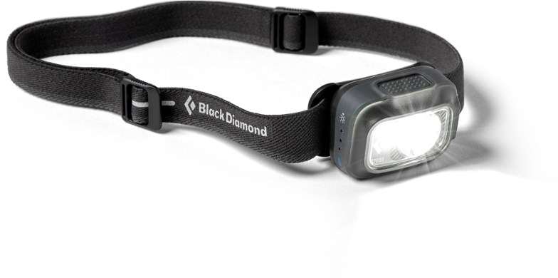
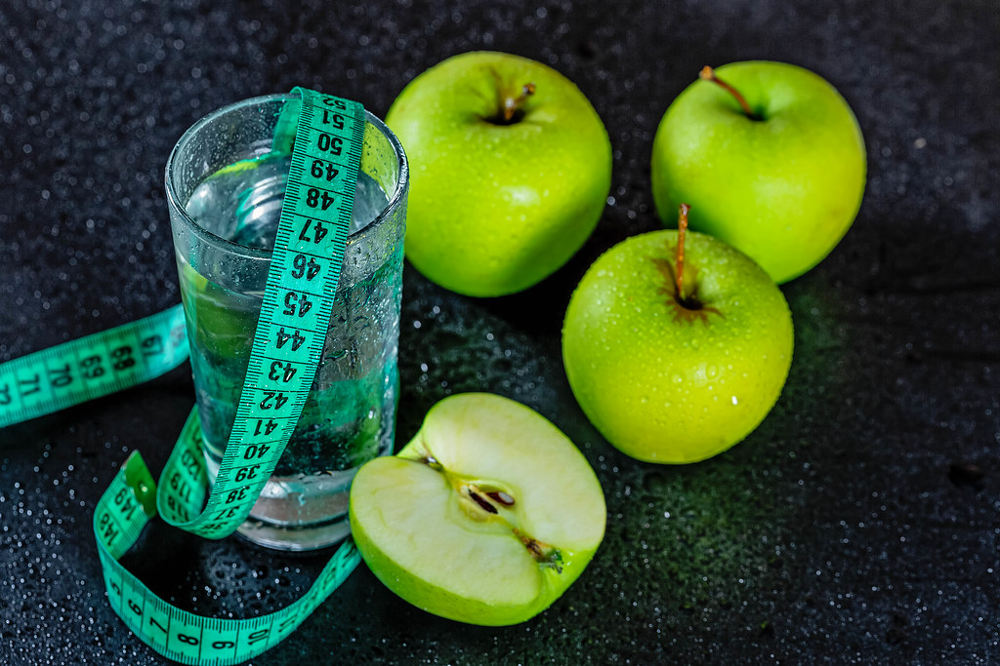

These are some of the most common gear brought along for hikes, according to REI, a well known hiking and outdoor accessories store, which may vary based on hike length:
Hiking Backpack

Hiking Boots

Map and Compass

First Aid Kit

Knife or Multi-tool

Sunscreen

Insect Repellent

Headlamp or Flashlight

Extra Food and Water
